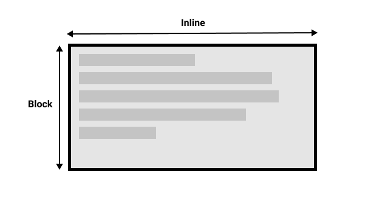
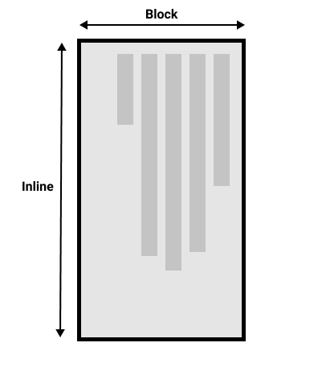

Writing modes and block and inline layout
We have already discussed block and inline layout, and the fact that some things display as block elements and others as inline elements. As we have seen described above, block and inline is tied to the writing mode of the document, and not the physical screen. Blocks are only displayed from the top to the bottom of the page if you are using a writing mode that displays text horizontally, such as English.
If we look at an example this will become clearer. In this next example I have two boxes that contain a
heading and a paragraph. The first uses writing-mode: horizontal-tb, a writing mode that is
written horizontally and from the top of the page to the bottom. The second uses
writing-mode: vertical-rl; this is a writing mode that is written vertically and from right
to left.
When we switch the writing mode, we are changing which direction is block and which is inline. In a
horizontal-tb writing mode the block direction runs from top to bottom; in a
vertical-rl writing mode the block direction runs right-to-left horizontally. So the
block dimension is always the direction blocks are displayed on the page in the writing
mode in use. The inline dimension is always the direction a sentence flows.
This figure shows the two dimensions when in a horizontal writing mode.
This figure shows the two dimensions in a vertical writing mode.
Once you start to look at CSS layout, and in particular the newer layout methods, this idea of block and inline becomes very important. We will revisit it later on.
Direction
In addition to writing mode we also have text direction. As mentioned above, some languages such as Arabic are written horizontally, but right-to-left. This is not something you are likely to use in a creative sense — if you simply want to line something up on the right there are other ways to do so — however it is important to understand this as part of the nature of CSS. The web is not just for languages that are displayed left-to-right!
Due to the fact that writing mode and direction of text can change, newer CSS layout methods do not refer to left and right, and top and bottom. Instead they will talk about start and end along with this idea of inline and block. Don't worry too much about that right now, but keep these ideas in mind as you start to look at layout; you will find it really helpful in your understanding of CSS.